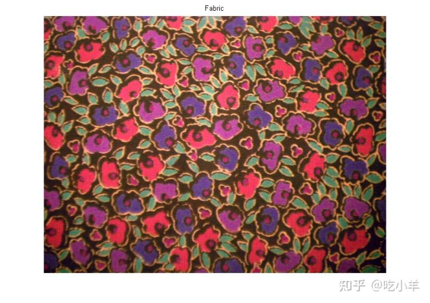
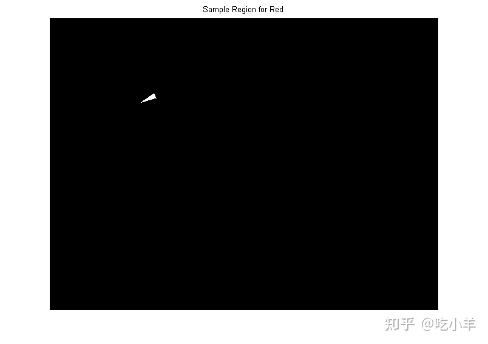
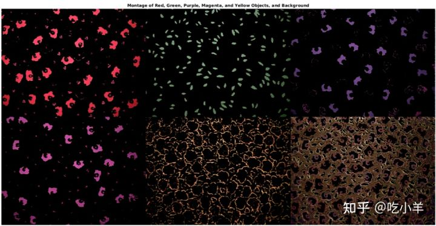
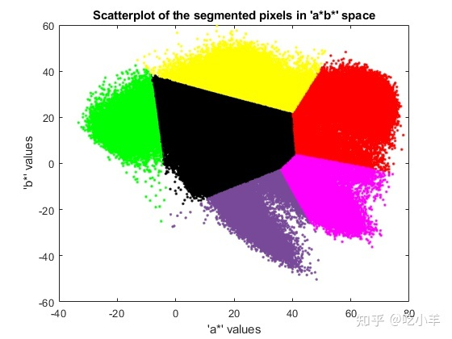

Home
本示例说明如何通过分析 Lab 颜色空间来识别织物中的不同颜色。
第 1 步：获取图像
读入fabric.png图像，这是一幅彩色织物的图像。
fabric = imread('fabric.png');
imshow(fabric)
title('Fabric')

步骤 2：计算每个区域在 Lab 颜色空间中的样本颜色
您可以在图像中看到六种主要颜色：背景色、红色、绿色、紫色、黄色和洋红色。请注意，您可以在视觉上轻松区分这些颜色。Lab 色彩空间（也称为 CIELAB 或 CIE Lab）使您能够量化这些视觉差异。
Lab 颜色空间源自 CIE XYZ 三色值。Lab空间由亮度L、色度a组成（表示颜色沿红绿轴下降的位置）、色度层b（表示颜色沿蓝黄轴下降的位置）。
我们的方法是为每种颜色选择一个小样本区域，并在ab空间中计算每个样本区域的平均颜色。您将使用这些颜色标记对每个像素进行分类。
为了简化此示例，请加载存储在 MAT 文件中的区域坐标。
load regioncoordinates;
nColors = 6;
sample_regions = false([size(fabric,1) size(fabric,2) nColors]);
for count = 1:nColors
sample_regions(:,:,count) = roipoly(fabric,region_coordinates(:,1,count), ...
region_coordinates(:,2,count));
end
imshow(sample_regions(:,:,2))
title('Sample Region for Red')

使用rgb2lab函数， 将织物 RGB 图像转换为 Lab图像。
lab_fabric = rgb2lab(fabric);
计算您使用roipoly提取的每个区域的平均a和b值。这些值用作ab空间中的颜色标记。
a = lab_fabric(:,:,2); b = lab_fabric(:,:,3); color_markers = zeros([nColors, 2]); for count = 1:nColors color_markers(count,1) = mean2(a(sample_regions(:,:,count))); color_markers(count,2) = mean2(b(sample_regions(:,:,count))); end
例如，ab空间中红色样本区域的平均颜色为
fprintf('[%0.3f,%0.3f] \n',color_markers(2,1),color_markers(2,2));
[69.828,20.106]
步骤 3：使用最近邻规则对每个像素进行分类
每个颜色标记现在都有一个a和一个b值。在lab_fabric图像中，可以通过计算像素与每个颜色标记之间的欧几里德距离，来对图像中的每个像素进行分类。最小距离会告诉您该像素与某个颜色标记最匹配。例如，如果像素与红色标记之间的距离最小，则该像素将被标记为红色像素。
创建一个包含颜色标签的数组，即 0 = 背景、1 = 红色、2 = 绿色、3 = 紫色、4 = 洋红色和 5 = 黄色。
color_labels = 0:nColors-1;
初始化要在最近邻分类中使用的矩阵。
a = double(a); b = double(b); distance = zeros([size(a), nColors]);
执行分类。
for count = 1:nColors
distance(:,:,count) = ( (a - color_markers(count,1)).^2 + ...
(b - color_markers(count,2)).^2 ).^0.5;
end
[~,label] = min(distance,[],3);
label = color_labels(label);
clear distance;
步骤 4：显示最近邻分类的结果
标签矩阵包含织物图像中每个像素的颜色标签。使用标签矩阵按颜色分隔原始织物图像中的对象。
rgb_label = repmat(label,[1 1 3]); segmented_images = zeros([size(fabric), nColors],'uint8'); for count = 1:nColors color = fabric; color(rgb_label ~= color_labels(count)) = 0; segmented_images(:,:,:,count) = color; end
将五种分类颜色显示为并列对比的图像。还显示图像中未分类为颜色的背景像素。
montage({segmented_images(:,:,:,2),segmented_images(:,:,:,3) ...
segmented_images(:,:,:,4),segmented_images(:,:,:,5) ...
segmented_images(:,:,:,6),segmented_images(:,:,:,1)});
title("Montage of Red, Green, Purple, Magenta, and Yellow Objects, and Background")

步骤 5：显示标记颜色的a和b值
您可以通过绘制被分类为不同颜色的像素的a和b值来查看最近邻分类对不同颜色群体的分离程度。出于显示目的，用颜色标签标记每个点。
purple = [119/255 73/255 152/255];
plot_labels = {'k', 'r', 'g', purple, 'm', 'y'};
figure
for count = 1:nColors
plot(a(label==count-1),b(label==count-1),'.','MarkerEdgeColor', ...
plot_labels{count}, 'MarkerFaceColor', plot_labels{count});
hold on;
end
title('Scatterplot of the segmented pixels in ''a*b*'' space');
xlabel('''a*'' values');
ylabel('''b*'' values');

======================================================================
我的测试结果及程序
下面是我测试的代码：

注：本文根据MATLAB官网内容修改而成。